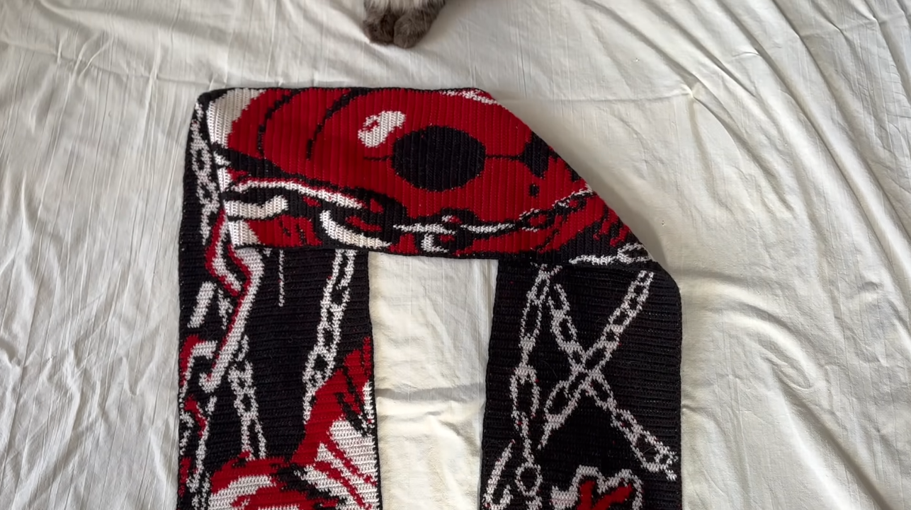
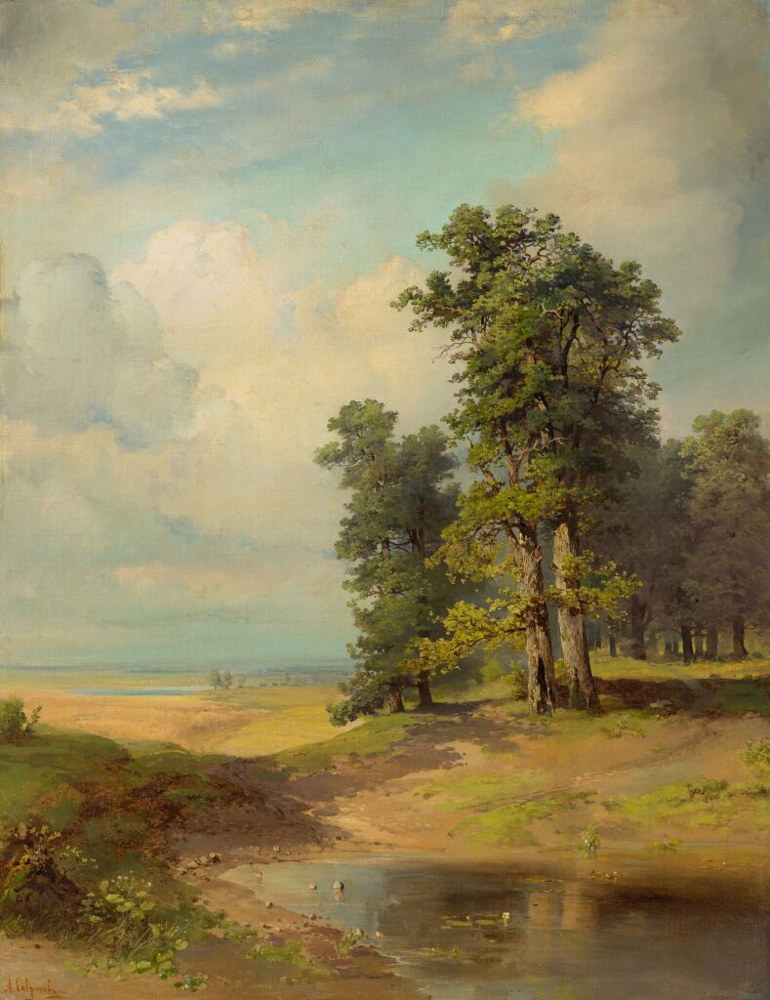
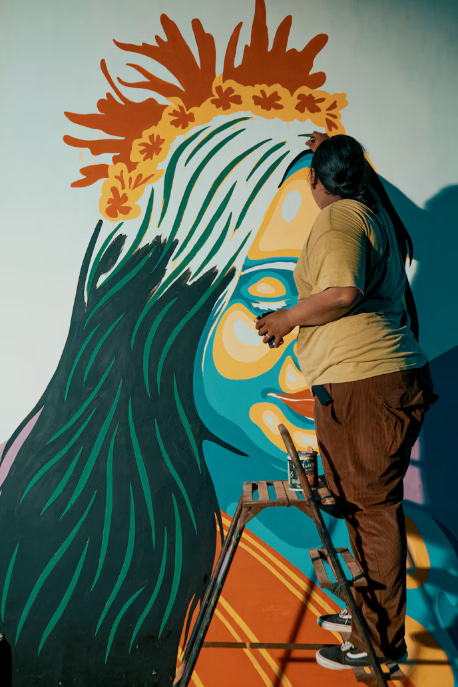
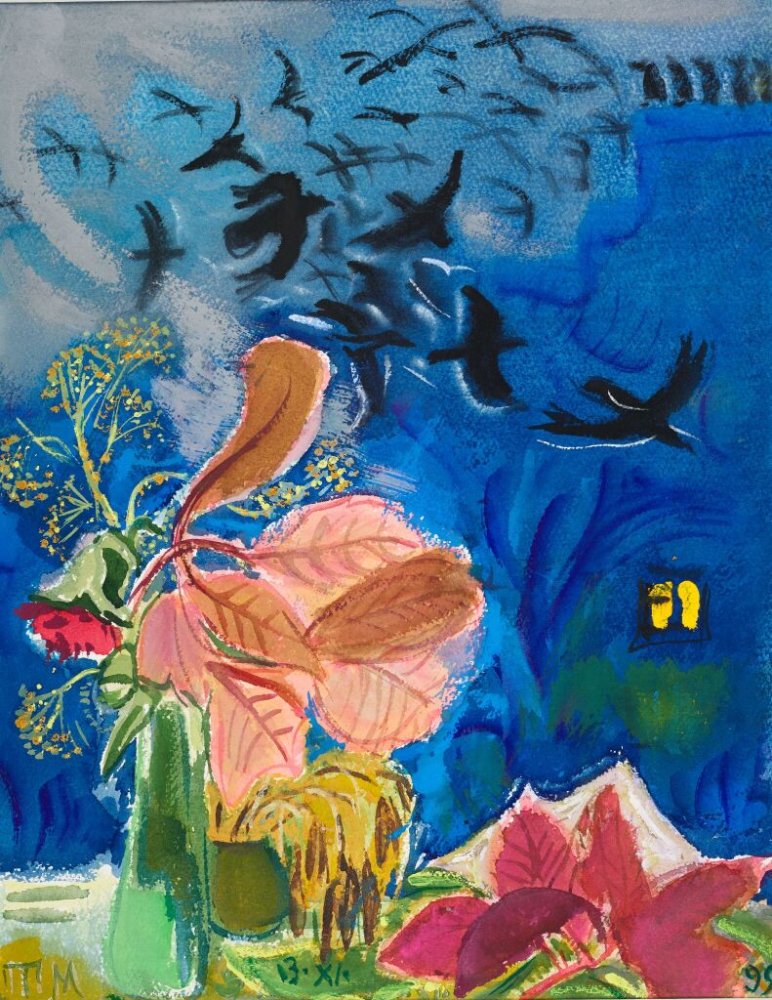

Вязание шарфа
Заказчица хотела шарф со своим рисунком, но наносить принт на готовую одежда ей показалось слишком скучным, поэтому она отправила мне схему, по которой и было связано изделие.
Вязаная одежда
Подробнее о проектеЕвгения Соколова
Художник: роспись стен, картины, вязаная одежда
Я расписываю стены в квартирах и небольших кафе, пишу картины на заказ и вяжу тёплую одежду. Ко мне обращаются семьи, которые хотят сделать дом уютнее, и владельцы маленьких заведений, которым нужен свой характер.
В работе я люблю спокойные природные цвета и внимание к деталям. Сначала обсуждаю идею с заказчиком, потом показываю эскиз и только после этого берусь за краски или спицы.
Посмотреть работыЯ художник с опытом работы более восьми лет. Начинала с росписи детских комнат для друзей и постепенно перешла к заказам для семей и разных детских учереждений. За это время расписала больше тридцати стен и связала десятки свитеров и шарфов.
Мне важно, чтобы работа жила вместе с человеком: чтобы роспись не надоела через год, а свитер носился много сезонов. Поэтому я подбираю спокойные оттенки, натуральные материалы и узоры, которые не выходят из моды.

Заказчица хотела шарф со своим рисунком, но наносить принт на готовую одежда ей показалось слишком скучным, поэтому она отправила мне схему, по которой и было связано изделие.
Вязаная одежда
Подробнее о проекте
Интерьерная картина для гостиной в тёплых тонах. Заказчица хотела спокойный пейзаж, который будет сочетаться с мебелью. Картина написана маслом на холсте 60×80 см.
Живопись

Роспись одной стены в небольшом семейном кафе. Девушка на стене - маскот этого заведения. Гости часто фотографируются на фоне этой стены.
Роспись стен

Заказчик захотел решить проблему пустого пространства между окнами на кухне довольно интересным способом. Картина написана гуашью на холсте 50×40 cм.
Живопись
Подходит, если нужно превратить скучную стену в детской, кафе или студии в акцент интерьера.
Что входит в работу:
Решает задачу, когда хочется, чтобы в комнате появилась вещь «под себя», а не типовая картинка из магазина.
Что входит в работу:
Подходит, если нужен тёплый свитер, кардиган или шапка по своим меркам.
Что входит в работу:
Напишите мне, если хотите обсудить роспись стены, картину или вязаную вещь. Расскажите, что задумали, — вместе подберём идею и сроки.
Почта: hello@example.com
Учебная форма. Сообщения не отправляются.